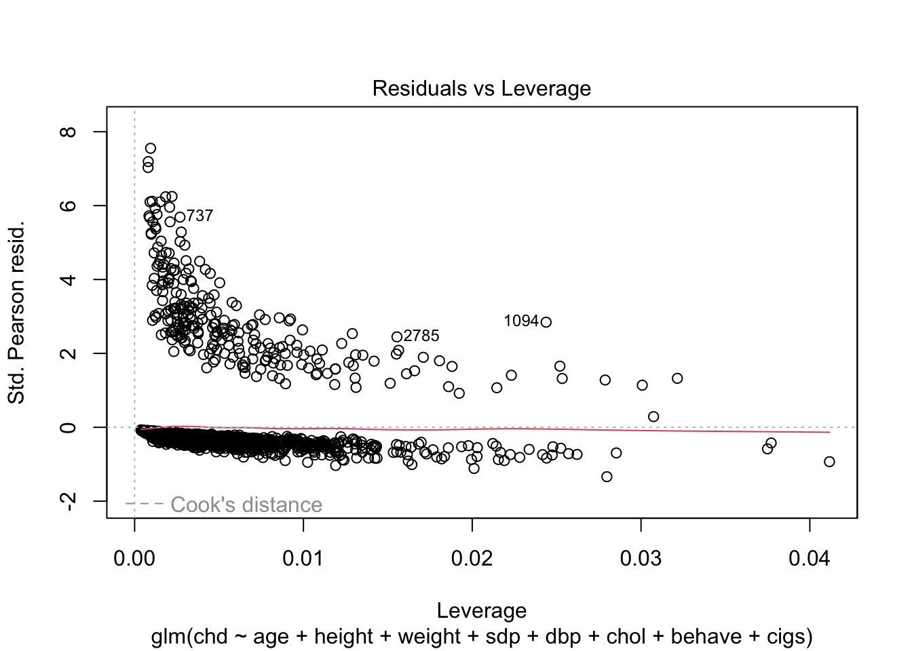

library(tidyverse)
library(ggplot2)
library(epiR)
library(faraway)
library(alr4)
library(sm)
library(MASS)
library(knitr)
library(kableExtra)8 로지스틱 회귀모형 실습 1
8.1 필요한 패키지와 함수
source("../R/functions.R")8.2 분석 자료
로지스틱 회귀모형에 대한 분석은 교과서 Faraway (2016) 에서 사용된 wcgs 데이터프레임을 사용한다.
데이터프레임 wcgs 은 Western Collaborative Group Study 에 참가한 3154명의 39-59 세 남성에 대한 신체 자료와 관상동맥질환(coronary heat disease)의 발병 여부에 대한 자료이다.
help(wcgs)head(wcgs) age height weight sdp dbp chol behave cigs dibep chd typechd timechd arcus
1 49 73 150 110 76 225 A2 25 A no none 1664 absent
2 42 70 160 154 84 177 A2 20 A no none 3071 present
3 42 69 160 110 78 181 B3 0 B no none 3071 absent
4 41 68 152 124 78 132 B4 20 B no none 3064 absent
5 59 70 150 144 86 255 B3 20 B yes infdeath 1885 present
6 44 72 204 150 90 182 B4 0 B no none 3102 absent반응 변수는 chd 로서 만약 coronary heat disease 가 발생한 여부를 yes 와 no 로 표시한다.
str(wcgs)'data.frame': 3154 obs. of 13 variables:
$ age : int 49 42 42 41 59 44 44 40 43 42 ...
$ height : int 73 70 69 68 70 72 72 71 72 70 ...
$ weight : int 150 160 160 152 150 204 164 150 190 175 ...
$ sdp : int 110 154 110 124 144 150 130 138 146 132 ...
$ dbp : int 76 84 78 78 86 90 84 60 76 90 ...
$ chol : int 225 177 181 132 255 182 155 140 149 325 ...
$ behave : Factor w/ 4 levels "A1","A2","B3",..: 2 2 3 4 3 4 4 2 3 2 ...
$ cigs : int 25 20 0 20 20 0 0 0 25 0 ...
$ dibep : Factor w/ 2 levels "A","B": 1 1 2 2 2 2 2 1 2 1 ...
$ chd : Factor w/ 2 levels "no","yes": 1 1 1 1 2 1 1 1 1 1 ...
$ typechd: Factor w/ 4 levels "angina","infdeath",..: 3 3 3 3 2 3 3 3 3 3 ...
$ timechd: int 1664 3071 3071 3064 1885 3102 3074 3071 3064 1032 ...
$ arcus : Factor w/ 2 levels "absent","present": 1 2 1 1 2 1 1 1 1 2 ...이번 분석에서는 wcgs 자료에서 dibep 와 마지막 3개 변수를 제외하고 사용하겠다.
wcgs_1 <- wcgs %>%
dplyr::select(!(typechd:arcus) ) %>% dplyr::select(!dibep )
head(wcgs_1) age height weight sdp dbp chol behave cigs chd
1 49 73 150 110 76 225 A2 25 no
2 42 70 160 154 84 177 A2 20 no
3 42 69 160 110 78 181 B3 0 no
4 41 68 152 124 78 132 B4 20 no
5 59 70 150 144 86 255 B3 20 yes
6 44 72 204 150 90 182 B4 0 no8.3 로지스틱 회귀모형
이제 다음과 같이 개의 설명 변수가 포함된 로지스틱 회귀모형을 적합해 보자.
fit_all <- glm(chd ~ age + height + weight + sdp + dbp + chol + behave + cigs , family = binomial, wcgs_1)
summary(fit_all)
Call:
glm(formula = chd ~ age + height + weight + sdp + dbp + chol +
behave + cigs, family = binomial, data = wcgs_1)
Coefficients:
Estimate Std. Error z value Pr(>|z|)
(Intercept) -12.989034 2.336470 -5.559 2.71e-08 ***
age 0.065068 0.012125 5.367 8.03e-08 ***
height 0.015824 0.033141 0.477 0.63302
weight 0.007874 0.003881 2.029 0.04248 *
sdp 0.017536 0.006395 2.742 0.00611 **
dbp 0.000121 0.010833 0.011 0.99109
chol 0.011076 0.001522 7.278 3.38e-13 ***
behaveA2 0.088266 0.222589 0.397 0.69171
behaveB3 -0.602705 0.244216 -2.468 0.01359 *
behaveB4 -0.499214 0.320978 -1.555 0.11988
cigs 0.020998 0.004280 4.906 9.32e-07 ***
---
Signif. codes: 0 '***' 0.001 '**' 0.01 '*' 0.05 '.' 0.1 ' ' 1
(Dispersion parameter for binomial family taken to be 1)
Null deviance: 1779.2 on 3141 degrees of freedom
Residual deviance: 1580.4 on 3131 degrees of freedom
(12 observations deleted due to missingness)
AIC: 1602.4
Number of Fisher Scoring iterations: 68.3.1 회귀계수의 의미
위의 결과에서 회귀계수의 의미에 대하여 살펴보자. 먼저 하루에 평균 피우는 담배의 개수 cigs 의 의미는 다음과 같다.
fit_all$coefficients['cigs'] cigs
0.02099804 설명변수 cigs 의 계수가 0.020998 이므로 담배의 개수가 1개 증가하면 심장병 관련 질환의발생 확률이 다음과 같이 오즈비 단위로 증가 한다.
아래 식에서 유의할 점은 다른 설명변수들은 모두 같다는 가정하에서 성립한다는 것이다.
\[ \frac{\text{odd(cigs = a+1)}}{\text{odd(cigs = a)}} = \frac{\tfrac{P(\text{chd = y} | \text{cigs = a+1})}{1- P(\text{chd = y} | \text{cigs = a+1} )}} {\tfrac{P(\text{chd = y} | \text{cigs = a})}{1- P(\text{chd = y} | \text{cigs = a})}}= \exp(0.020998) = 1.02122 \tag{8.1}\]
이제 좀 더 이해하기 쉬운 상대위험으로 회귀계수의 영향에 대하여 알아보자.
먼저 연속형 변수들의 평균을 구하고 데이터프레임으로 만들자. 또한 범주형 변수인 behave 도 하나의 레벨을 추가하자.
mean_vars <- get_means(wcgs_1) %>% t() %>% as.data.frame()
mean_vars$behave <- 'A2'
mean_vars age height weight sdp dbp chol cigs behave
1 46.27869 69.77774 169.9537 128.6328 82.01554 226.3724 11.60051 A2이제 데이터프레임 mean_vars 에서 주어진 설명변수의 값에서 성공의 확률을 예측해 보자
\[ \hat P(y=1| \pmb x) = \frac{1}{1+\exp(-[\hat \beta_0 + \hat \beta_1 x_1 + \dots + \hat \beta_p x_p])} \tag{8.2}\]
predict(fit_all, newdata=mean_vars, type = "response") 1
0.08085642 참고로 함수 prediction 은 선형예측식의 값만을 구할 수 있다.
\[ \hat \eta = \hat \beta_0 + \hat \beta_1 x_1 + \dots + \hat \beta_p x_p \]
predict(fit_all, newdata=mean_vars, type = "link") 1
-2.430767 위에서 type = "link" 는 default 선택문이다.
predict(fit_all, newdata=mean_vars) 1
-2.430767 확률로 바꿀려면 다음과 같이 식 8.2 을 이용하면 된다.
1/(1+exp(-predict(fit_all, newdata=mean_vars, type = "link"))) 1
0.08085642 위와 같이 계산은 logit 함수의 역함수인 ilogit 함수를 이용하여 구할 수 있다
faraway::ilogit(predict(fit_all, newdata=mean_vars, type = "link")) 1
0.08085642 이제 데이터프레임 mean_vars 의 두 번째 행에 cigs 가 1 증가한 관측값을 추가하자.
sel_var <- 'cigs'
mean_vars_df <- rbind(mean_vars,mean_vars)
mean_vars_df[2,c(sel_var)] <- mean_vars_df[2,c(sel_var)] + 1
mean_vars_df age height weight sdp dbp chol cigs behave
1 46.27869 69.77774 169.9537 128.6328 82.01554 226.3724 11.60051 A2
2 46.27869 69.77774 169.9537 128.6328 82.01554 226.3724 12.60051 A2다시 예측값을 구해보면 다음과 같다.
pre_p <- predict(fit_all, newdata=mean_vars_df, type = "response")
pre_p 1 2
0.08085642 0.08243076 위의 결과로 오즈비를 구해보면 식 8.1 에 나타난 값과 같다.
(pre_p[2]/(1-pre_p[2]))/(pre_p[1]/(1-pre_p[1])) 2
1.02122 이제 우리는 확률의 예측값을 계산할 수 있으므로 상대위험을 구해보면 다음과 같다.
pre_p[2]/pre_p[1] 2
1.019471 이제 age 도 비슷한 분석을 해보자. 나이는 30세와 60세의 상대위험을 계산해 보자.
sel_var <- 'age'
mean_vars_df <- rbind(mean_vars,mean_vars)
mean_vars_df[1,c(sel_var)] <- 30
mean_vars_df[2,c(sel_var)] <- 60
pre_p <- predict(fit_all, newdata=mean_vars_df, type = "response")
pre_p[2]/pre_p[1] 2
5.974438 이제 범주형 변수에 대한 회귀계수의 의미를 살펴보자. 먼저 범주형변수 behave 가 가질 수 있는 범주를 보자.
levels(wcgs_1$behave)[1] "A1" "A2" "B3" "B4"또한 범주형변수 behave 에 관련된 회귀계수의 추정값을 보자.
coef1 <- fit_all$coefficients
coef1 (Intercept) age height weight sdp
-1.298903e+01 6.506806e-02 1.582390e-02 7.873538e-03 1.753588e-02
dbp chol behaveA2 behaveB3 behaveB4
1.209992e-04 1.107574e-02 8.826567e-02 -6.027047e-01 -4.992142e-01
cigs
2.099804e-02 위의 결과에서 behave 의 A0 에 대한 게수의 값은 0이다. 즉 다음과 같은 식이 성립한다.
\[ \begin{aligned} \text{logit} [ P(y=1 | \text{behave = A0}) ] = \cdots & + 0 + \cdots \\ \text{logit} [ P(y=1 | \text{behave = A2}) ] = \cdots & + (0.0882657) + \cdots \\ \text{logit} [ P(y=1 | \text{behave = B3}) ]= \cdots & + (-0.6027047) + \cdots \\ \text{logit} [ P(y=1 | \text{behave = B4}) ]= \cdots & + (-0.4992142) + \cdots \end{aligned} \]
따라서 다른 설명 변수들의 값이 고정되어 있다면, 예를 들어 behave 의 두 범주 A0 와 A2 에 대한 오즈비는 다음과 같다.
\[ \frac{\text{odd(behave = A2)}}{\text{odd(behave = A0)}} = \frac{\tfrac{P(\text{chd = y} | \text{ehave = A2})}{1- P(\text{chd = y} | \text{behave = A2)} )}} {\tfrac{P(\text{chd = y} | \text{ehave = A0})}{1- P(\text{chd = y} | \text{ehave = A0})}}= \exp(0.0882657 - 0) = 1.0922783 \tag{8.3}\]
8.3.2 모형의 비교: 내포된 모형
이제 몇 개의 변수를 제외한 모형을 더적합해 보자. 모형에서 height 와 dbp 를 제외하고 적합해 보자.
fit_1 <- glm(chd ~ age + weight + sdp + chol + behave + cigs , family = binomial, wcgs_1)
summary(fit_1)
Call:
glm(formula = chd ~ age + weight + sdp + chol + behave + cigs,
family = binomial, data = wcgs_1)
Coefficients:
Estimate Std. Error z value Pr(>|z|)
(Intercept) -11.989331 0.995324 -12.046 < 2e-16 ***
age 0.064732 0.012103 5.348 8.87e-08 ***
weight 0.008874 0.003173 2.797 0.00516 **
sdp 0.017326 0.004095 4.231 2.33e-05 ***
chol 0.011005 0.001513 7.274 3.49e-13 ***
behaveA2 0.090232 0.222140 0.406 0.68460
behaveB3 -0.602010 0.243734 -2.470 0.01351 *
behaveB4 -0.498449 0.320571 -1.555 0.11997
cigs 0.021198 0.004226 5.017 5.26e-07 ***
---
Signif. codes: 0 '***' 0.001 '**' 0.01 '*' 0.05 '.' 0.1 ' ' 1
(Dispersion parameter for binomial family taken to be 1)
Null deviance: 1779.2 on 3141 degrees of freedom
Residual deviance: 1580.7 on 3133 degrees of freedom
(12 observations deleted due to missingness)
AIC: 1598.7
Number of Fisher Scoring iterations: 6이제 두 개의 모형 fit_all 과 fit_1 을 비교해 보자. 두 모형의 편차(deviance)는 다음과 같다.
deviance(fit_all)[1] 1580.446deviance(fit_1)[1] 1580.676두 개의 모형 fit_all 과 fit_1 의 편차가 거의 차이가 없으므로 모형에서 height 와 dbp 를 제외하더라도 모형의 설명력이 거의 차이가 없다고 볼 수 있다.
이제 3개의 설명변수 height , dbp, weight 를 제외한 모형을 적합해 보자.
fit_2 <- glm(chd ~ age + sdp + chol + behave + cigs , family = binomial, wcgs_1)
summary(fit_2)
Call:
glm(formula = chd ~ age + sdp + chol + behave + cigs, family = binomial,
data = wcgs_1)
Coefficients:
Estimate Std. Error z value Pr(>|z|)
(Intercept) -10.582582 0.843068 -12.552 < 2e-16 ***
age 0.061049 0.012003 5.086 3.66e-07 ***
sdp 0.019909 0.003946 5.046 4.51e-07 ***
chol 0.010950 0.001502 7.290 3.10e-13 ***
behaveA2 0.073842 0.221516 0.333 0.73887
behaveB3 -0.630270 0.243056 -2.593 0.00951 **
behaveB4 -0.539369 0.319753 -1.687 0.09164 .
cigs 0.020246 0.004222 4.796 1.62e-06 ***
---
Signif. codes: 0 '***' 0.001 '**' 0.01 '*' 0.05 '.' 0.1 ' ' 1
(Dispersion parameter for binomial family taken to be 1)
Null deviance: 1779.2 on 3141 degrees of freedom
Residual deviance: 1588.4 on 3134 degrees of freedom
(12 observations deleted due to missingness)
AIC: 1604.4
Number of Fisher Scoring iterations: 6deviance(fit_all)[1] 1580.446deviance(fit_1)[1] 1580.676deviance(fit_2)[1] 1588.378이제 두 모형 fit_1 과 fit_2 의 편처의 차이를 보면 다음과 같다.
deviance(fit_2) - deviance(fit_1)[1] 7.702675이제 질문은 모형에서 weight 를 제외하면 모형의 설명력에 유의한 영향이 있는지에 대한 것이다. 이는 다음과 같은 가설로 표현할 수 있다.
\[ H_0 : \beta_{\text{weight}} = 0 \quad \text{vs.} \quad \beta_{\text{weight}} \ne 0 \]
이제 함수 anova 를 통해서 가설검정을 해보자.
anova(fit_2, fit_1, test = "Chisq")Analysis of Deviance Table
Model 1: chd ~ age + sdp + chol + behave + cigs
Model 2: chd ~ age + weight + sdp + chol + behave + cigs
Resid. Df Resid. Dev Df Deviance Pr(>Chi)
1 3134 1588.4
2 3133 1580.7 1 7.7027 0.005514 **
---
Signif. codes: 0 '***' 0.001 '**' 0.01 '*' 0.05 '.' 0.1 ' ' 1위의 결과에서 weight 를 제외하면 모형의 설명력에 유의한 영향이 있다고 할 수 있다. 즉 weight 는 모형에서 유의한 변수이다.
참고로 두 개의 설명 변수 height, dbp 를 제외한 경우는 큰 차이가 유의한 차이가 있는지 알아보자.
anova(fit_1, fit_all, test = "Chisq")Analysis of Deviance Table
Model 1: chd ~ age + weight + sdp + chol + behave + cigs
Model 2: chd ~ age + height + weight + sdp + dbp + chol + behave + cigs
Resid. Df Resid. Dev Df Deviance Pr(>Chi)
1 3133 1580.7
2 3131 1580.5 2 0.22978 0.8915위의 결과를 보면 \(H_0 : \beta_{\text{height}} =\beta_{\text{dbp}} = 0\)를 기각할 수 없다는 것을 알 수 있다.
주어진 모형에서 1개의 변수를 제거할 수 있는지는 다음과 같은 함수 drop1 으로 알아볼 수 있다. 아래 결과를 보면 각 독립변수를 제거한 경우에 얻어진 편차를 보여주고 그 편차의 차이가 유의한 지를 알려준다.
아래 결과를 보면 설명 변수 height 와 dbp 는 모형에서 제외해도 유의한 차이가 없음을 알려준다.
drop1(fit_all, test = "Chisq")Single term deletions
Model:
chd ~ age + height + weight + sdp + dbp + chol + behave + cigs
Df Deviance AIC LRT Pr(>Chi)
<none> 1580.5 1602.5
age 1 1609.1 1629.1 28.662 8.617e-08 ***
height 1 1580.7 1600.7 0.228 0.632710
weight 1 1584.5 1604.5 4.072 0.043612 *
sdp 1 1587.8 1607.8 7.299 0.006898 **
dbp 1 1580.5 1600.5 0.000 0.991089
chol 1 1635.2 1655.2 54.739 1.376e-13 ***
behave 3 1602.0 1618.0 21.518 8.218e-05 ***
cigs 1 1603.6 1623.6 23.159 1.492e-06 ***
---
Signif. codes: 0 '***' 0.001 '**' 0.01 '*' 0.05 '.' 0.1 ' ' 1적합한 모형에서 각 회귀계수의 신뢰구간은 다음과 같이 구할 수 있다.
confint(fit_all)Waiting for profiling to be done... 2.5 % 97.5 %
(Intercept) -1.761371e+01 -8.45120837
age 4.131448e-02 0.08887927
height -4.890449e-02 0.08105677
weight 2.268784e-04 0.01544556
sdp 4.869834e-03 0.02996578
dbp -2.114627e-02 0.02134188
chol 8.112039e-03 0.01407651
behaveA2 -3.351460e-01 0.53997138
behaveB3 -1.073224e+00 -0.11295633
behaveB4 -1.143870e+00 0.12153181
cigs 1.255611e-02 0.029354998.3.3 모형의 비교: 일반적인 모형
일반적으로 두 개 이상의 모형을 비교하는 경우 가장 자주 사용되는 측도는 정보기준 측도인 AIC(Akaike Information Criteris) 와 BIC(Bayesian Information Criteria) 가 이 있다. AIC와 BIC 모두 값이 작은 것이 좋으 모형이다.
이제 앞에서 살펴본 3개의 모형의 AIC 와 BIC 를 구해보자.
AIC(fit_all, fit_1, fit_2) df AIC
fit_all 11 1602.446
fit_1 9 1598.676
fit_2 8 1604.378BIC(fit_all, fit_1, fit_2) df BIC
fit_all 11 1669.024
fit_1 9 1653.149
fit_2 8 1652.799AIC 기준으로는 모형 fit_1 이 제일 좋으며 BIC 기준으로는 fit_2 가 가장 좋다. BIC 가 AIC 보다 설명변수의 수가 적은 성김 모형을 선호하는 일반적인 결과이다.
8.4 회귀모형의 진단
8.4.1 잔차
선형회귀 모형처럼 관측값(로지스틱 회귀에서는 0 또는 1)에서 예측값을 뺀 잔차 \(r_i\) (residual, raw residual)을 구할 수 있다.
\[ r_i = y_i - \hat P(y_i=1| \pmb x_i) \tag{8.4}\]
다음과 같이 residuals 함수에 type="response"를 이용하면 식 8.4 의 잔차 를 구할 수 있다.
head(residuals(fit_all, type="response")) # 너무 많아서 일부만 출력 1 2 3 4 5 6
-0.08157607 -0.06242009 -0.01031108 -0.01118637 0.84345627 -0.03832130 이제 잔차를 표준화한 피어슨 잔차(pearson residual)은 다음과 같이 구할 수 있다.
\[ r^*_i = \frac{y_i - \hat p_i}{\sqrt{\hat p_i (1-\hat p_i)}} \tag{8.5}\]
head(residuals(fit_all, type="pearson")) 1 2 3 4 5 6
-0.2980299 -0.2580228 -0.1020711 -0.1063622 2.3212047 -0.1996205 참고로 피어슨 잔차를 제곱한 합은 적합도 분석에 사용하는 카이제곱 통계량이다.
\[ \chi^2 = \sum_{i=1}^n \left [ r^*_i \right ]^2 \]
그리고 잔차를 분석하는 그림도 다음과 같이 출력할 수 있다.
plot(fit_all)
다른 잔차로서 편차 잔차(deviance residual) 이 있으며 이는 편차의 합으로 표시될 수 있도록 잔차를 로그가능도 함수의 값으로 정의한 것이다.
\[ d_i = sign(y-\hat p_i) \sqrt{-2\{ y_i \log \hat p_i + (1-y_i) \log (1- \hat p_i)\}} \tag{8.6}\]
여기서 정의된 편차 잔차는 다음의 식을 만족하도록 구한 잔차이다.
\[ \text{deviance} = D(\hat {\pmb y} ; \hat {\pmb \mu } ) = \sum_{i=1}^n d^2_i \]
로지스틱 회귀모형에서의 정의된 모든 잔차는 선형모형과의 잔차와는 많이 다르다. 로지스틱 회귀모형에서 반응값은 0 또는 1 의 값만 가지기 때문에 잔차의 범위가 제약되어 있고 두 개의 패턴으로 몰려서 나오기 때문에 이상점을 찾거나 등분산성을 판단하는 진단으로 이용하기는 힘들다.
8.4.2 다중공선성
로지스틱 회귀모형에서도 다중공선성(colliearity)는 쉽게 진단할 수 있다.
함수vif 를 이용하면 분산팽창계수(variance inflation factor; vif)의 값을 구하고 상대적으로 큰 값을 보이는 설명변수들이 다중공선성의 위험이 높다.
다음의 결과에서 두 개의 혈압 sdp 와 dbp 의 vif 값이 높다는 것을 알 수 있다.
vif(fit_all) GVIF Df GVIF^(1/(2*Df))
age 1.052733 1 1.026028
height 1.474285 1 1.214201
weight 1.599757 1 1.264815
sdp 2.656508 1 1.629880
dbp 2.792595 1 1.671106
chol 1.019601 1 1.009753
behave 1.029248 3 1.004816
cigs 1.051759 1 1.025553다음과 같이 설명변수들의 상관계수를 보면 두 개의 혈압 sdp 와 dbp 이 상관계수가 0.77로 다른 조합보다 높게 나타난다.
cor(model.matrix(fit_all)[,-1]) age height weight sdp dbp
age 1.000000000 -0.091924057 -0.033078516 0.17005253 0.143979992
height -0.091924057 1.000000000 0.533288106 0.01556533 0.006985365
weight -0.033078516 0.533288106 1.000000000 0.25127827 0.293968705
sdp 0.170052531 0.015565329 0.251278272 1.00000000 0.770044438
dbp 0.143979992 0.006985365 0.293968705 0.77004444 1.000000000
chol 0.089188510 -0.088937779 0.008537442 0.12306130 0.129597108
behaveA2 0.052019677 0.035509861 0.032336093 0.07146950 0.038463827
behaveB3 -0.065710685 -0.018273763 -0.022060732 -0.05832314 -0.040950551
behaveB4 -0.040543591 -0.025710608 -0.033791371 -0.03375835 -0.031730174
cigs -0.006111181 0.017304324 -0.082673038 0.02928485 -0.062670918
chol behaveA2 behaveB3 behaveB4 cigs
age 0.089188510 0.05201968 -0.06571069 -0.04054359 -0.006111181
height -0.088937779 0.03550986 -0.01827376 -0.02571061 0.017304324
weight 0.008537442 0.03233609 -0.02206073 -0.03379137 -0.082673038
sdp 0.123061297 0.07146950 -0.05832314 -0.03375835 0.029284852
dbp 0.129597108 0.03846383 -0.04095055 -0.03173017 -0.062670918
chol 1.000000000 0.03365476 -0.03791301 -0.03204021 0.096031834
behaveA2 0.033654760 1.00000000 -0.67403983 -0.30058884 0.069761255
behaveB3 -0.037913013 -0.67403983 1.00000000 -0.27929653 -0.060013668
behaveB4 -0.032040209 -0.30058884 -0.27929653 1.00000000 -0.053546698
cigs 0.096031834 0.06976125 -0.06001367 -0.05354670 1.0000000008.5 예측
이제 적합된 성공 확률을 이용하여 반응변수의 값과 예측값을이 얼마나 일치하는지 알아보자.
\[ \hat y_i = \begin{cases} \text{yes} & \text{ if } \hat p_i \ge \text{threshold} \\ \text{no} & \text{ if } \hat p_i < \text{threshold} \end{cases} \]
먼저 자주 사용되는 분류기준 \(\text{threshold}=0.5\) 이용하여 반응값을 예측해보자.
TH <- 0.5
pred_y <- ifelse(predict(fit_2, type="response") < TH , 0, 1)
pred_df <- data.frame(response=fit_1$y , predicted=pred_y)
head(pred_df) response predicted
1 0 0
2 0 0
3 0 0
4 0 0
5 1 0
6 0 0class_table <- xtabs(~response+predicted, data=pred_df)
class_table predicted
response 0 1
0 2884 1
1 254 3이제 분류기준을 정하면 위의 분류표와 민감도와 특이도를 계산하는 함수를 만들어 보자
classify_func <- function(fit_glm, th){
pred_y <- ifelse(predict(fit_glm, type="response") < th , 0, 1)
pred_df <- data.frame(response=fit_glm$y , predicted=pred_y)
class_table <- xtabs(~response+predicted, data=pred_df)
sensitivity <- class_table[2,2]/(class_table[2,1] + class_table[2,2])
specificity <- class_table[1,1]/(class_table[1,1] + class_table[1,2])
list(class_table, sensitivity, specificity)
}분류기준을 0.5 로 하면 다음과 같은 결과가 얻어진다.
classify_func(fit_1, 0.5)[[1]]
predicted
response 0 1
0 2882 3
1 255 2
[[2]]
[1] 0.007782101
[[3]]
[1] 0.9989601분류기준을 0.3으로 낮추면 민감도가 조금 증가하는 것을 알 수 있다.
classify_func(fit_1, 0.3)[[1]]
predicted
response 0 1
0 2824 61
1 234 23
[[2]]
[1] 0.08949416
[[3]]
[1] 0.9788562양성예측도와 음성예측도를 구하는 함수를 다음과 같이 만들 수 있다.
classify_func(fit_1, 0.3)[[2]][1][1] 0.08949416# prev : 유병률
calpred <- function(prev, sen, spe){
pred.pos <- sen*prev/(sen*prev + (1-spe)*(1-prev))
pred.neg <- spe*(1-prev)/(spe*(1-prev) + (1-sen)*(prev))
res <- data.frame(sen, spe, prev, pred.pos, pred.neg)
colnames(res) <- c("Sensitivity", "SPecificity","Prevalnce", "Pred. Post.", "Pred. Nega.")
res
}분류기준을 0.3, 관상동맥질환의 한국 유병율을 \(3.0\%\) 로 놓고 양성예측도와 음성예측도를 구해보자.
calpred(0.03, classify_func(fit_1, 0.3)[[2]][1], classify_func(fit_1, 0.3)[[3]][1]) Sensitivity SPecificity Prevalnce Pred. Post. Pred. Nega.
1 0.08949416 0.9788562 0.03 0.1157534 0.9720362